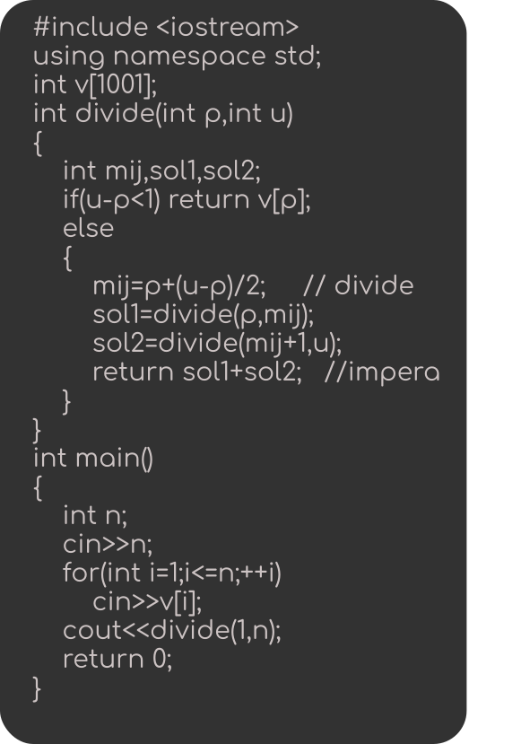

Procedeu
“Divide et impera” se bazează pe descompunerea problemei în două sau mai multe subprobleme ușor de rezolvat. Astfel, soluția pentru problema inițială se obține combinând soluțiile subproblemelor.
Calcularea sumei elementelor unui
vector folosind “Divide et impera”
1. Vectorul inițial este împărțit în două fragmente (divide).
2. Fragmentele sunt la rândul lor împărțite în fragmente mai mici (subprobleme).
3. Când fiecare fragment este compus dintr-un singur element, se adună elementele vecine și se obține soluția subproblemei.
4. După găsirea soluțiilor tuturor subproblemelor (soluții locale), acestea se combină pentru a se obține soluția globală și pentru a rezolva problema (impera).
Codul sursă
